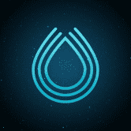
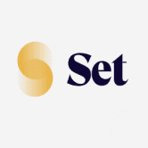

SCOOBY-DOO X FUNKO 金基！ Funko 以 Digital Pop!™ 的形式将神秘公司的帮派、怪物和恶棍带入生活！™ 拿起你的史酷比零食，准备完成你的收藏！收集任何传奇或圣杯稀有物品的 Digital Po
SCOPXNFT SCOPXNFT Marketplace是一个基于币安智能链（BEP721）入口的NFT交易平台，以最佳的客户体验创建、购买、出售和使用NFT。 SCOPXNFT Marketplace 是币安智
Scorpio DeFi 为什么选择 ScorpioDefi？ 所有本地和非本地池将有 3 小时的收获锁定。这是为了阻止那些在耕作开始后立即抛弃 SCORPIO 的人。 每次转让 SCORPIO 必须缴纳 5% 的
SCREAM SCREAM 是一个基于 Fantom 的借贷协议，适用于 Fantom。 SCREAM 提供完全去中心化、透明和非托管的点对点借贷解决方案。 SCREAM 旨在为更传统的加密资产借贷服务建立高速
Scrub Finance $LION 算法代币是快速发展的生态系统的支柱，旨在为 cronos 网络和 Savannah 金融协议带来流动性和新用例。该协议的底层机制动态调整 $LION 的供应量，使其价格相对于 $SVN 的价格
Seagull Swap Seagull Swap，Iotex 网络中的一个新的 Defi 平台。 seagull swap 旨在为 Defi 用户和 IoTex 网络社区提供最安全和持久的单产农业体验。 它是目前为数不多的低排放、高供应的
Sealem 下一代 DeFi+Gamefi 协议 Sealem Lab 正在构建 DeFi+Gamefi 产品的生态系统，这些产品将互操作以最大化回报，同时将用户风险降至最低。 这种关注支持我们选择评估的机会和我们做出的决
Sebuh.net Sebuh.net 由 Sebuh Honarchian 和他的团队开发。 Sebuh Squad 自 2017 年以来一直在增长。该小组的主要重点是增加用户对 Tezos 生态系统中各种活动的参与。通过提供 Yeild 农场、Dex 门户、代币部
Second Chance Lottery Second Chance Lotteries 是一种新型彩票，让输家有第二次获胜的机会。在这个彩票中输入不同的游戏，然后再试一次，有机会获胜。使用双重机会彩票，如果您输了彩票也没关
Secret Finance 我们从 Fantom 开始，我们的主要代币 $SECRET 现在可以在 SpookySwap 上使用。 Secret Finance，#Fantom 网络上与 $USDC 挂钩的最智能算法代币！ Secret Finance 的全部重点是建立一个真
Secret Society of Odd Fellows Secret Society of Odd Fellows 是 888 个 Odd Fellows NFT 的集合——独特的数字收藏品，秘密生活在以太坊区块链上。您的 Odd Fellow 兼作您的 Secret Society 会员卡，并授予您访问会员专属福利的权限。 会员
Secreth Santa Secreth Santa 允许任何人发送和接收不可替代代币 (ERC-721) 作为礼物！该系统是基于队列的，每个人都可以通过向最后一位圣诞老人发送 NFT 来加入，然后他们将在稍后收到下一
Secrets Exchange Secrets Exchange 以一对一、匿名和安全的方式将陌生人通过他们的秘密联系起来。当您提交秘密时，您会收到其他人提交的秘密，分享你的秘密并得到别人的。以及与他们
Secretum Secretum – 去中心化、加密的消息传递和场外交易 dApp。 Secretum 的使命是让去中心化的消息传递和交易变得无缝。它兼容 DeFi 和元界，被定位为 Web 3.0 时代的首选解决方案
Secure Bank Tron 📎🆕新合约GO GO GO 💰安全银行Tron💰 🔸2020 年 9 月 8 日发布。 ◼️计划： ▫️10% 4lvl 参考。 ▫️最小。存款10 TRX ▫️Global Daily 总量的 10% 再
Secure Trading Tron SECURETRADINGTRON.CLUB 是如何运作的？ 该合约的运作包含以下变量，合约内的每日投资的 1% 将记入您的账户，这怎么可能？答案很简单，通过交易产生的余额收益。为实现这一点，
Seeder Finance SEEDER Finance 是最简单的 DeFi 项目，允许在币安智能链上进行杠杆收益农业。它允许用户从整个平台的播种和耕作以及活动中获得最大的回报和利。DeFi 项目，提供从
SeedMoney Finance (Layered) SEEDS 上线后，我们注意到 Harvest Lockup 对每个人来说并不相同，因此可能会导致相互套利倾销，不像 Lavacake 每个人都有相同的锁定，这对每个人来说都更加公平和公平。需要更
Seek Rewards 完全可持续的每天 1% 的被动收入合同。存款从 100 美元到 5,000 美元 BNB 开始并每天获得报酬，直到您的 BNB 翻倍。通过推荐使您的资金翻倍，但不需要赞助。多种外部收
SeizeCoin 一款基于Tron.Network的夺币游戏，玩家VS玩家。 SEIZECOIN 今天的价格为 0 美元，24 小时交易量为 0 美元。 SEIZECOIN 价格在过去 24 小时内上涨了 0%。它有
SeleniumSwap 我们通过修改合约解决了以下这些问题：我们如何防止 Rugpull Selenium Swap 是 Binance 智能链上全新的去中心化交易所，被称为第二代收益耕作机制，它允许永久价格上涨，并在发
Sentient Swap Polygon 上的高产农业从未如此简单！介绍 SentientSwap - 唤醒心灵。 在多边形 DEX 上建立新的收益农场。 我们致力于一个长期的项目，努力建立一个社区，共同赚钱。最大供应量
Sentoki NFTs SENTOKI NFT 系列的目的是什么？ Sentoki 是 2888 个 Sentoki NFT 的集合——位于 Solana 区块链上的独特的诅咒数字战士。您的 Sentoki 兼作公民身份，可以访问 Norowareta Uchu 质押系统，每天赚取 10 美元 JU
Serious Dice 玩家为玩家制作的骰子游戏。 经典骰子游戏，0.75% 赌场优势和投资资金的机会。聊天，玩，赢大奖，重复 Serious Dice 在 Thundercore 区块链上运行。，它是 100% 完全无需信任
 Serum xxxxxxxxxx Serum 为 DeFi 带来了中心化交易所的速度和便利，同时保持完全去信任和透明。Serum 是一种去中心化交易所协议，为去中心化金融带来前所未有的速度和低交
Sesame Token Mystery Box #1 基于 BSC 链的去中心化神秘盒子游戏 与在黑盒中运行的传统游戏不同，芝麻游戏运行在公平、透明、非托管和不可变的智能合约上。此外，只要您参与，每个人
 Set Protocol Set Protocol 是一种建立在以太坊上的非托管协议，允许创建、管理和交易 Sets、ERC20 代币，这些代币代表一个投资组合或一篮子基础资产。每个 Set 根据其智
SevenLoop Defi 中最高可持续的 Auto-stake/compound 协议 SELO 每 7 分钟以 1,000,000.00% 的可持续固定 APY 奖励持有者。 （这是 BSC 中的理论限制）例如：投资 1000 美元 SELO 在短短 12 个月内获得 10,001,000.00 美元 SELO。 SevenLoop Auto-Stake
Severe Rise games Severe Rise 游戏代币作为 Severe Rise 游戏的治理和实用代币。一个代币用于多个游戏。 SRG 旨在为多个用例仅使用一个代币提供游戏元界。Severe Rise Games 由志同道合的人组
Sexy Girl Slot Sexy Girl Slot 是基于 EOS 区块链的优质老虎机。 Sexy Girl Slot 完全去中心化且可证明是公平的，用户可以从每一个结果中进行验证。此外，它是一款每个人都可以享受的低端老


的即开型区块链上彩票游戏")


 是用于构建平台的代币，用于支持应用于 Sen 生态系统中 GameFi 和 Metaverse 产品的金融和经济系统")


 网络上构建")